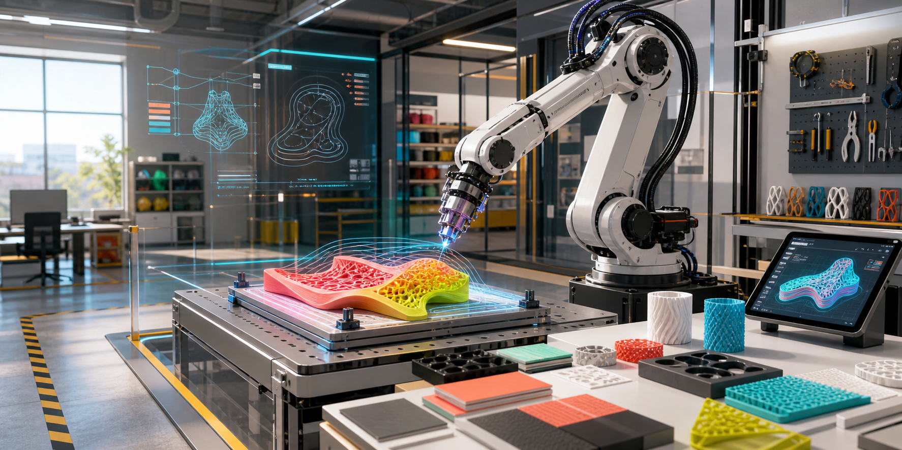

Material
Extrusion Path Calibration
Balance speed, flow, spacing, and layer height for bead quality.
Open outline
2024 curriculum support toolkit
A vibrant training interface for robotic fabrication modules, experiment planning, safety readiness, and workshop documentation.
Learning sequence
Six workshop modules move learners from orientation to capstone delivery with checkpoints for safety, process thinking, and documentation.
Workflow stages, machine context, and documentation habits.
02Translate design intent into constraints, tests, and risk notes.
03Motion types, tool frames, speeds, and dry-run reasoning.
04Tool behavior, path strategy, process variables, and setup logic.
05Controlled trials, variables, measurements, and next-test decisions.
06Plan, fabricate, document, critique, and present a compact project.
Fabrication tests
Pick an experiment track, compare variables, and open the full outline when the workshop is ready to run.
Balance speed, flow, spacing, and layer height for bead quality.
Open outlineEvaluate wire temperature, travel speed, and foam response.
Open outlineTest grip force, approach height, placement speed, and release timing.
Open outlineUse readings to inform setup verification and process monitoring.
Open outlineReadiness layer
A compact preflight panel for workshop readiness, paired with the full safety documents in the repository.
Documentation kit
Copy-ready structures for planning, running, and summarizing robotic fabrication workshops.